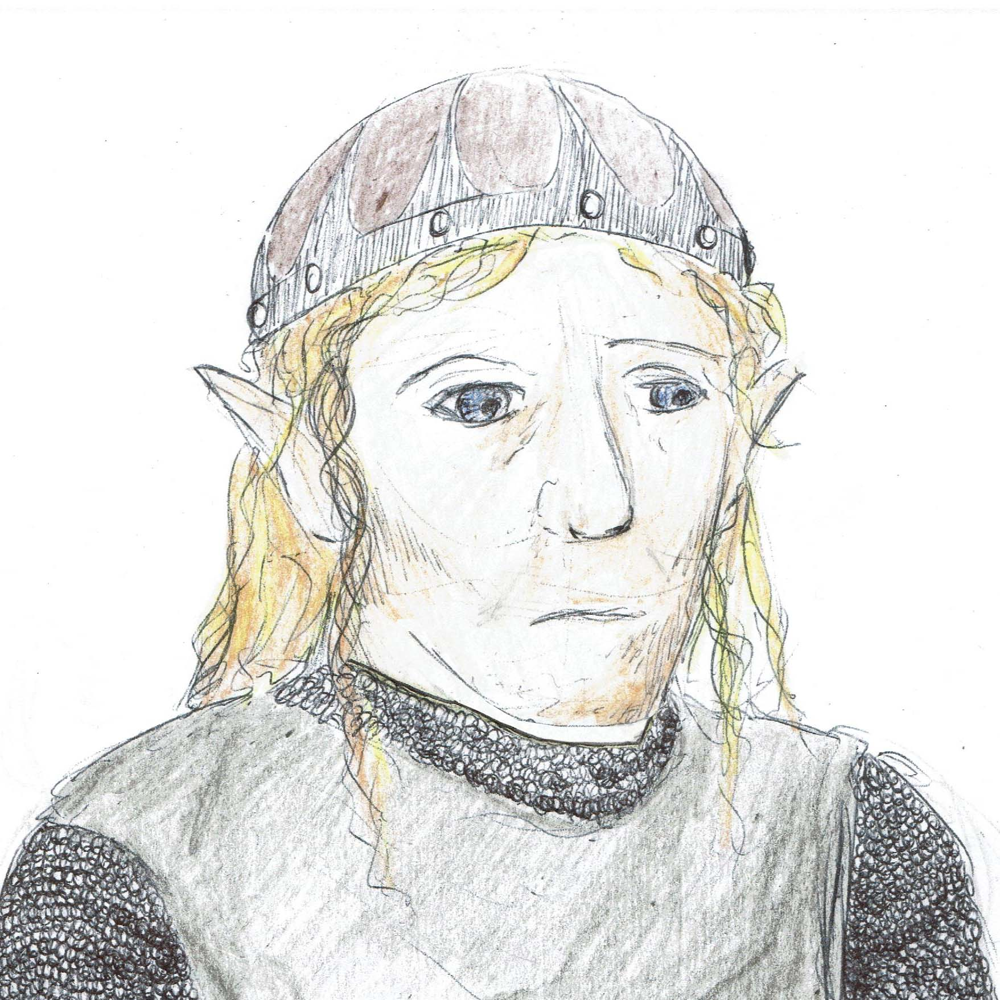
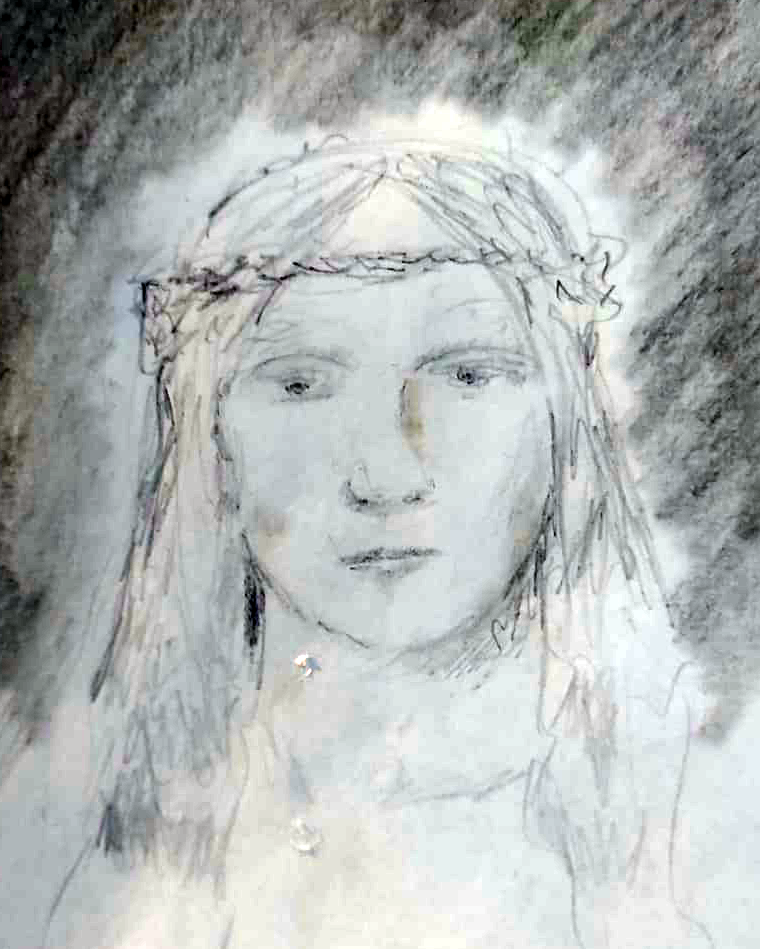
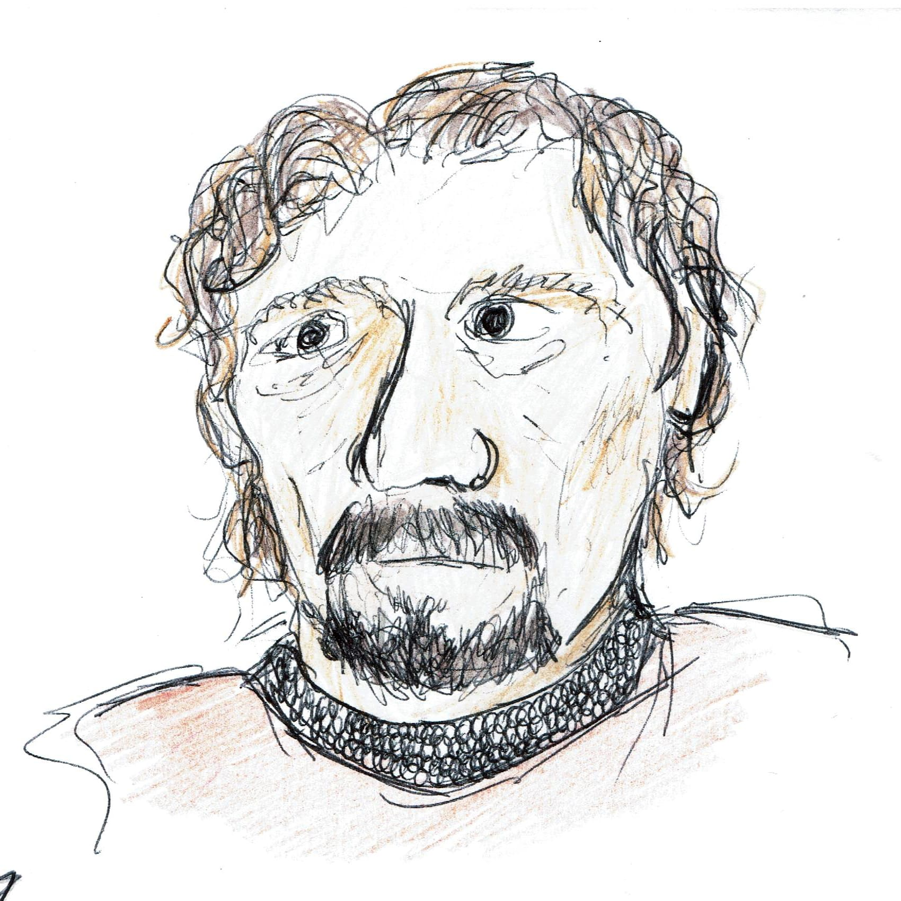
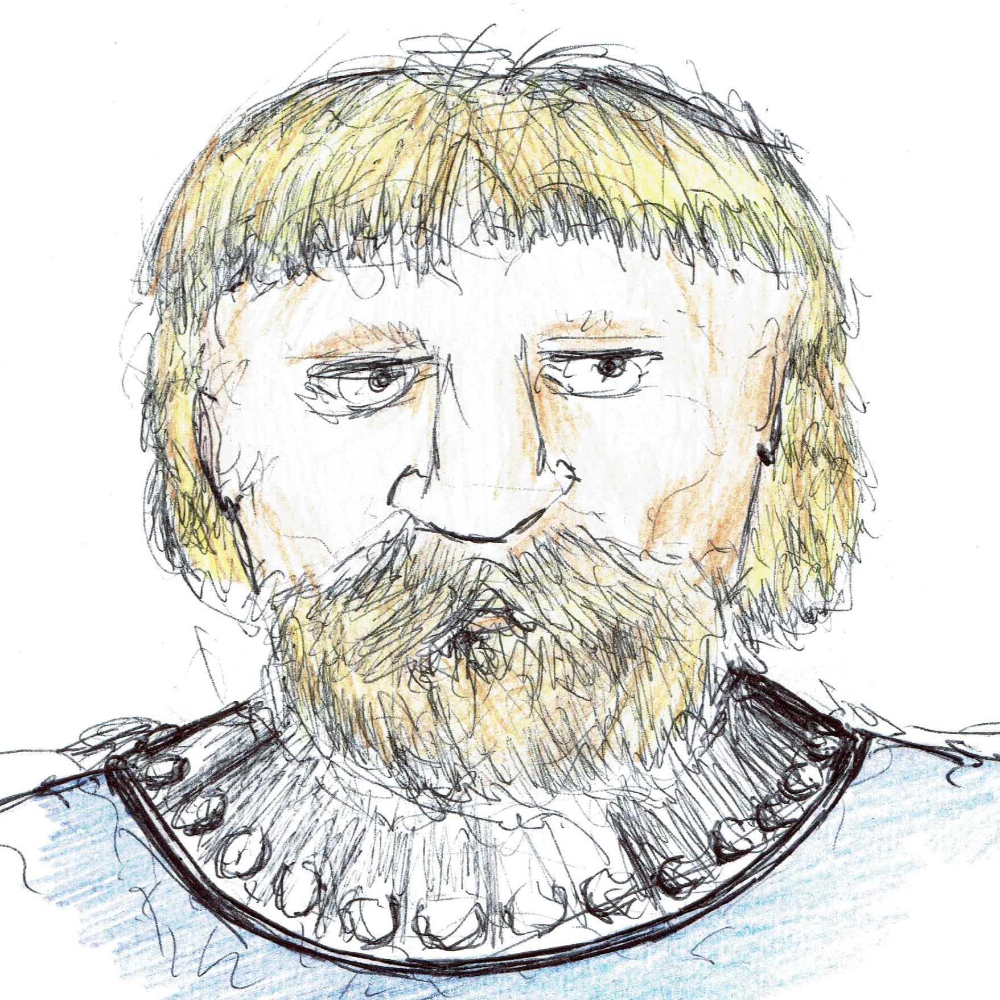

Hadnur Vrielathen
-- personaje para lo de Eberron --Generalidades

| Raza | Jóravar (Medioelfo de Jorvaire) - reglas de 2014 |
| Clases | Guerrero 1 / Warlock X - reglas del manual de 2024 |
| Patrón | Infernal (aunque por ahora no lo sabe) |
| Trasfondo | Soldado - 2014 |
| Origen | Lyrentop, Cyre del Sur (967) |
| STR | DEX | CON | INT | WIS | CHA |
| 14 | 12 | 14 | 8 | 10 | 17 |
| Historia resumida |
| Nació en el seno de una familia de Jóravar de Lyrentop, en Cyre del Sur. A los tres años su familia huyó de la ciudad a causa de la conquista del sur de Cyre por los goblins de Haruuc Shaarat'kor. Tras esto se crió en Kalazart, donde al alcanzar la mayoría de edad se unió al ejército. Fue enviado a la frontera entre Cyre y los territorios ocupados por los goblins. El Día del Luto le pilló ahí, y apenas si pudo huir. Tras semanas de vagar confuso por lo ocurrido, logró salir de los territorios goblins de Darguul y llegar a la ciudad de Korranberg, en la recientemente independizada región de Zilargo. Allí, junto con otros supervivientes de Cyre, trabaja clandestinamente (generalmente también militares a los que el Luto les pilló en Darguul) en rescatar y relocalizar a los habitantes de Cyre que han caído presos por los goblins de Darguul, proporcionándoles apoyo y tratando de mantener la unidad entre sus compatriotas. |
| Algunos detalles sobre su vida antes del patrón |
| Le prometió a Édhala casarse con ella una vez volviese de la guerra en Darguul. Desde el Día del Luto no sabe nada de ella, y aunque una parte de él se mantiene con esperanza, otra sabe que es prácticamente imposible que Édhala siga con vida después de lo ocurrido. Ella era, como él, una Jóravar, pero del Cyre central. La familia de Édhala veía bien su matrimonio, y como símbolo, el padre de Édhala le dió a Hadnur el anillo que habría de darle a su hija una vez él regresase de Darguul. Todavía lo guarda, pues todavía tiene esperanzas de reencontrarse con ella.
Hadnur vivió sus primeros combates con aproximadamente 20 años. Junto con otros antiguos habitantes del Sur enrolados en el ejército, fue enviado a Darguul con el objetivo de romper el bloqueo de Warden Keep, que había sido sitiada por los goblins. El día del luto estaba en territorio de Cyre. Apenas recuerda nada de lo que pasó, frente al avance de la niebla todos los suyos huyeron en desbandada en dirección contraria, al corazón de Darguul. Esos días fueron de confusión extrema, y no comenzaon a esclarecerse sus sentidos hasta que no llegó a la orilla del río Torlaac. Sabiendo que no era seguro quedarse ahí, siguió avanzando hacia las grandes marismas de la orilla oeste del río, y desde ahí logró llegar a Karrenburg. Allí fue acogido por unos Jorvaire, que lo incluyeron en sus Cenas de Unidad. El patriarca de esta familia es Énir Durnol. Aunque muchos de los Jóravar no estuviesen a favor de la causa de Cyre, no podían darle la espalda a uno de los suyos, a un Jóravar, pues de acuerdo con la cultura de estos medio-elfos (nunca les llames así), a pesar de ser de otro país, no era un extraño para ellos. A los pocos días de llegar Hadnur a Zilargo, llegaron otros dos más supervivientes (ver el texto de Fasolte y Gamlen, algo más abajo), y con el tiempo fueron llegando otros, algunos de los cuales habían luchado en Darguul, como Hadnur. Viendo que todos llegaban confusos y conmocionados por lo que habían vivido en Cyre, Hadnur decidió organizar nuevas Cenas de Unidad entre los recién llegados, ampliando las fronteras tradicionalmente raciales de esta práctica a todos los de su nación que quisiesen unirse, y así fue estableciéndose una pequeña comunidad de refugiados de Cyre en Zilargo, los que huyeron de la destrucción por la vía del sur. Esto no pasó desapercibido a las autoridades de Zilargo, que amenazaron con devolverlos forzosamente a las tierras devastadas por las que habían llegado. Viendo esto, los de Cyre decidieron que quienes no quisiesen quedarse ahí para rescatar a los que aún quedaban en Darguul, deberían irse por su seguridad a la colonia de Nueva Cyre, en Breland, que contaba con una situación legal más favorable, y que incluso estaba siendo dirigida por el príncipe de Cyre, Oargev ir'Wynarn. Así, en Karrenburg quedaron principalmente soldados de Cyre, entre ellos Hadnur, que organizaban entradas en Darguul para rescatar a sus compatriotas de las manos de los señores de la guerra goblins, quienes se habían aprovechado de la huida de gente de Cyre hacia Darguul durante el Día del Luto. Aunque lograsen rescatar a muchos, cada vez los goblins estaban mejor asentados en Darguul, y así estas operaciones eran cada vez más dificultosas. Por otro lado, las autoridades de Zilargo cada vez estaban más descontentas con la presencia de refugiados de Cyre, aunque hubiesen reducido bastante sus números en los pasados meses y la mayor parte de ellos estuviese de paso a otras tierras, y se rumoreaba que las acciones policiales contra ellos eran inminentes. También se rumorea que con las entradas de los soldados de Cyre en Darguul, la relación comercial entre algunos mercaderes de Karrenburg y los goblins está tensándose demasiado, de ahí que la situación para los refugiados de Cyre cada vez sea peor en Zilargo. Mientras esto sea así, las Cenas de Unidad seguirán realizándose de forma discreta, casi en la clandestinidad. |
 Énir Durnol |
| Detalles sobre su vida tras el patrón |
| Inicialmente el patrón contacta con él mediante sueños e intermediarios. Todo comienza con sueños extraños, sus típicas pesadillas sobre el Día del Luto comienzan a tener una atmósfera positiva y delirante, a través de estos sueños intuye que ese evento, en lugar de ser algo malo, es la base sobre la que se construirá un bien mayor, más grande aun que el sueño de Galifar I, aunque no sabe qué forma tomará este gran bien. Al poco tiempo estos sueños parecen pasar a la realidad, algunos de los símbolos y caras del sueño aparecen en los lugares a los que va despierto, y a veces parecen ser premoniciones de lo que va a vivir. Una noche sueña que está otra vez en el Día del Luto, revive cada momento de cada día y lo siente como si volviese a estar ahí, y lo recuerda todo de forma más clara que cuando está despierto. Tras huir durante horas cae al suelo, incapaz de seguir corriendo, y una mano le ayuda a levantarse. Justo al ver la cara de su salvador se despierta, y cree que ha recordado algo, hasta ese momento no tenía ningún recuerdo de ese salvador suyo, pero ahora le es inconcebible que no lo hubiese recordado antes. Ese mismo día, en una Cena de Unidad, se encuentra con esa persona. Nadie le habla, y parecería que Hadnur es el único capaz de verle. Tras la cena le sigue y decide hablar con él, y entonces el extraño le habla: la gran obra de Hadnur está incompleta. El Día del Luto, cuando le llegó la hora de llevarse a Hadnur, vió que este todavía tenía cosas por hacer, y decidió dejarle vivo para que las completase. No puede decirle en qué consisten estas tareas, pero le dice que si confía en él y sigue sus planes, le dará las fuerzas necesarias para lograrlas, y el gran plan le será revelado, y todo lo que le turba y le entristece de aquél día y aquella guerra será solucionado. Sólo debe confiar en quien ya le salvó. Como muestra de su buena voluntad, le dará el poder de invocar la vieja espada familiar de los Vrielathen, la que fuera perdida el Día del Luto. Hadnur sintió entonces que la maravilla inicial del encuentro había ido marchitándose poco a poco, y la sospecha que comenzó como un susurro se había convertido gradualmente en un grito de auxilio ensordecedor. Volvió a mirar a su salvador, para ver si este era la fuente del terror que lo inundaba, y vió entonces que el extraño había desaparecido, la única prueba de que alguna vez había estado ahí era la espada que Hadnur sostenía. Por fin la espada de los Vrielathen volvía a ser empuñada. |
| Gente conocida |
| Sobre su familia: Su padre es Hvet Úrthol Vrielathen, y su madre es Fäerne Lísaldh Válathen. El nombre completo de Hadnur es Hadnur Hvero Vrielathen (Hadnur hijo de Hvet de la casa Vrielathen [Vrílathen]). Hadnur tiene un hermano llamado Ísol y una hermana llamada Vála, ambos son menores que él. Su hermana nació al poco de mudarse su familia al Cyre central, en el 973, y su hermano es aún más joven, nació en el 984. Lo último que Hadnur supo de su hermana, enfermera de profesión, era que estaba en la frontera entre Cyre y Breland, donde hubo también combates. De haber sobrevivido al Luto, estaría seguramente en Nueva Cyre. Su hermano pequeño se quedó en Kalazart junto con sus padres, en el Cyre central. Nació poco después de la ocupación de la ciudad por las tropas de Thrane, que misteriosamente se retiraron tras su obtención de ciertos libros y pergaminos de la ciudad. Hadnur vivió esta campaña bélica con 17 años. Es difícil que Ísol, Hvet y Fäerne hayan sobrevivido, ya que Kalazart se encuentra en el corazón de Cyre.
Édhala: es su prometida. Se conocieron en Kalazart, y como él, es una Jóravar. Es parte de la familia Óstera, que habitaban en Cyre. Su familia no apoyó la rebelión de los mercenarios de Valenar, por lo que se mudaron a Kalazart a partir del 956, en el Cyre central. Allí, el padre de Édhala, Cáramir [un verdadero patriota Cyreño], trabajaba en la logística y en el abastecimiento de las tropas de Cyre, ya que Kalazart es un importante nexo de unión entre Metrol y la frontera con Thrane y Breland, con quienes estaban en guerra. Édhala nació en Kalazart en el año 970. Desde la conquista de Kalazart por las tropas de Thrane y su posterior retirada en 983, trabaja ayudando a su padre a restablecer las vías comerciales entre la ciudad y Metrol. Aunque inicialmente, por su edad, no supiese hacer mucho, en el 994 ya se había convertido en un figura importante del comercio local, y muchos la veían como un símbolo de resistencia de la ciudad de Kalazart, que poco a poco comenzaba a resurgir tras el golpe del 983. Al igual que Ísol, Hvet y Fäerne, es extremadamente difícil que Édhala sobreviviese al Luto.  Édhala Fasolte y Gamlen: fueron los dos primeros supervivientes de Cyre que llegaron a Karrenburg tras la llegada de Hadnur. Como él, fueron soldados estacionados en Darguul, pero el Día del Luto cayeron en manos de un grupo de goblins que tenía pensado venderlos como esclavos en Rhukaan Draal. Cuando vieron oportunidad, escaparon, y tras varios días de huida lograron cruzar el paso del sur de las montañas y llegaron a Zilargo. Ambos son humanos. Rápidamente se hicieron amigos de Hadnur, y junto con él han organizado el rescate de otros supervivientes atrapados en Darguul.   Gamlen (izquierda) y Fasolte (derecha) Énir Durnol: Es uno de los Jóravar más importantes de Karrenburg, y el más anciano. Conoce personalmente a todos los Jóravar de la ciudad, y se preocupa por su bienestar. Es el organizador de las Cenas de Unidad de la ciudad. Acogió a Hadnur cuando este llegó desde Darguul, y le proporcionó un techo y comida cuando este lo necesitó. No ve bien que Hadnur y otros supervivientes de Cyre hayan extendido el alcance de las cenas de unidad para acoger a otros habitantes de Cyre no Jóravar, pero entiende por qué lo hace y no trata de sabotear esas cenas. |
| Metahistoria del personaje |
| El nombre de Hadnur lo saqué de la canción de Burzum Der weinende Hadnur del álbum del álbum Hliðskjálf. A veces he visto traducido a este tal Hadnur como Höðr, el dios hermano de Balder, y aunque no tengo yo muy claro que esa relación con el personaje mitológico nórdico sea cierta (no sé en qué idioma se le llamará Hadnur a Höðr), sí que me inspira lo suficiente como para relacionarme al Hadnur que voy a jugar con el Höðr nórdico, pues de la misma manera de la que este mató accidentalmente a su hermano, el Hadnur de la partida va, sin saberlo, en camino de destruir todo lo que ama. En esta partida, el patrón demoníaco hará el papel de Loki, y le dará a Hadnur las herramientas de la tragedia. Finalmente cuando dispare la flecha, quedará llorando cómo Höðr, y en mi mente sonará la canción de Burzum, el llanto de Hadnur*.
* sé que no se traduce como "el llanto de Hadnur", sino como "el Hadnur lloroso" o "el Hadnur que llora", pero esas traducciones más literales no quedan bien, de ahí mi retoque. |